Yunhao Ge |
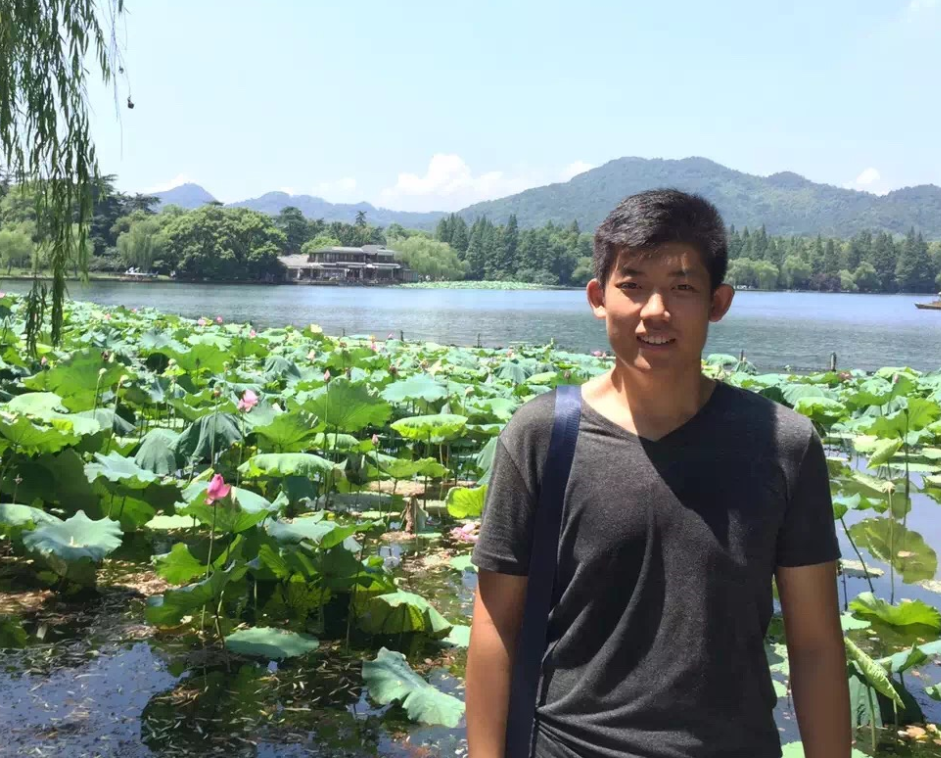 |
Last year M.Phil @ Shanghai Jiao Tong University.Robotics Institute of Shanghai Jiao Tong University.
800 Dongchuan Road, Minhanng District, Shanghai, China |
|
| Email: gyhandy@sjtu.edu.cn Check out my CV. Find me on Github |
I am a last year M.Phil in Robotics Institute at Shanghai Jiao Tong University (SJTU), advised by Prof. Yanzheng Zhao and Prof. Weixin Yan. Before that, I got the B.Eng. of Mechatronics at Shandong University, advised by Prof. Shujiang Chen.
My research interests includes deep learning for medical image analysis, deep learning for robotics and intelligent control. Looking for a Interest-Match Ph.D. Program which starts from Fall 2019 .
| 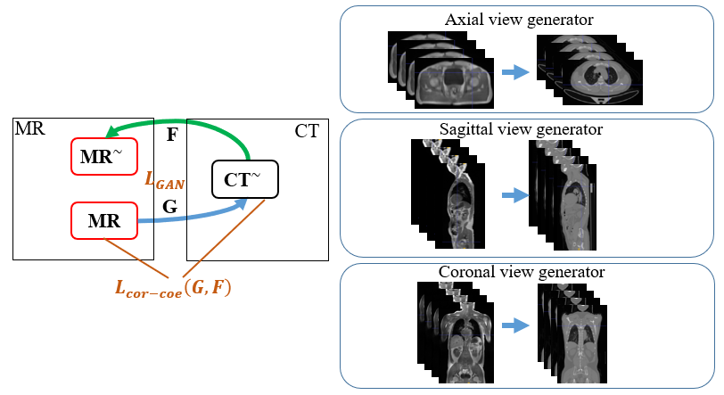 | Unpaired MR to CT Synthesis with Multi-view Adversarial Learning Yunhao Ge, Zhong Xue, Yiqiang Zhan and Xiang Zhou, SPIE-Image Processing, Aug.2018 (under review). |
| 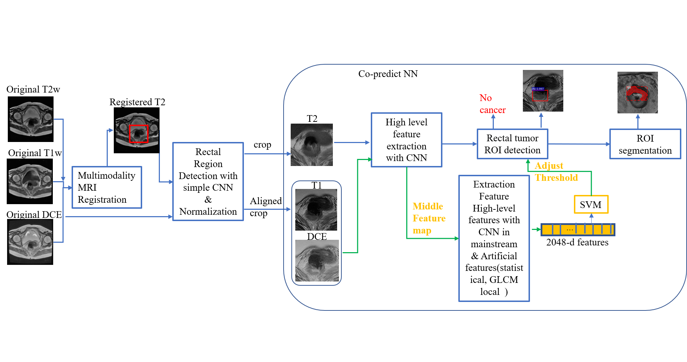 | Automatic Detection and Segmentation of Rectal Cancer based on Multimodality Fusion and Co-predictive Neural Network Yunhao Ge, Bin Li, Weixin Yan Medical Image Analysis, June 2018 (under review). |
| 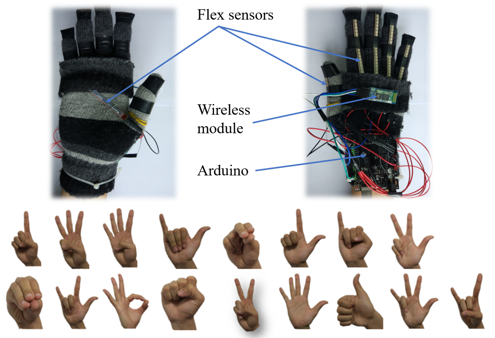 | A Real-time Gesture Prediction System Using Neural Networks and Multimodal Fusion
based on data glove Yunhao Ge, Bin Li and Weixin Yan The 10th International Conference on Advanced Computational Intelligence (ICACI 2018). [Paper] |
| 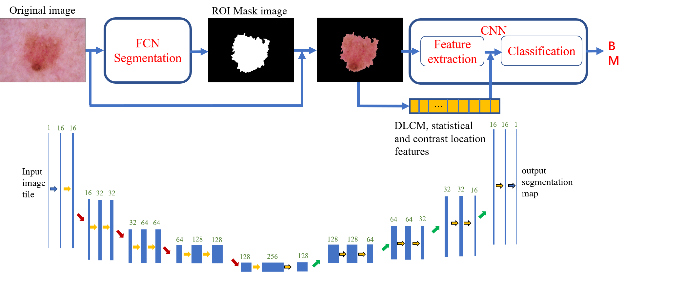 | Melanoma Segmentation and Classification in Clinical Images Using Deep Learning Yunhao Ge, Bin Li, Enguang Guan, Weixin Yan and Yanzheng Zhao The 10thInternational Conference on Machine Learning and Computing (ICMLC 2018) . [Paper] |
| 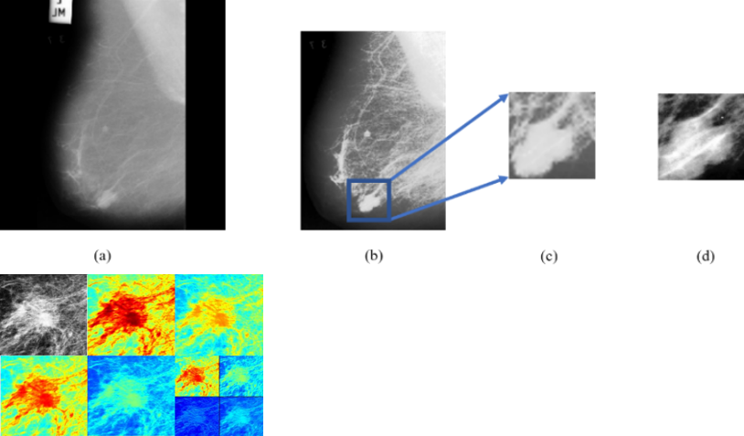 | Benign and malignant mammographic image classification based on Convolutional
Neural Networks Yunhao Ge, Bin Li, Enguang Guan, Weixin Yan and Yanzheng Zhao The 10thInternational Conference on Machine Learning and Computing (ICMLC 2018) . [Paper] |
| 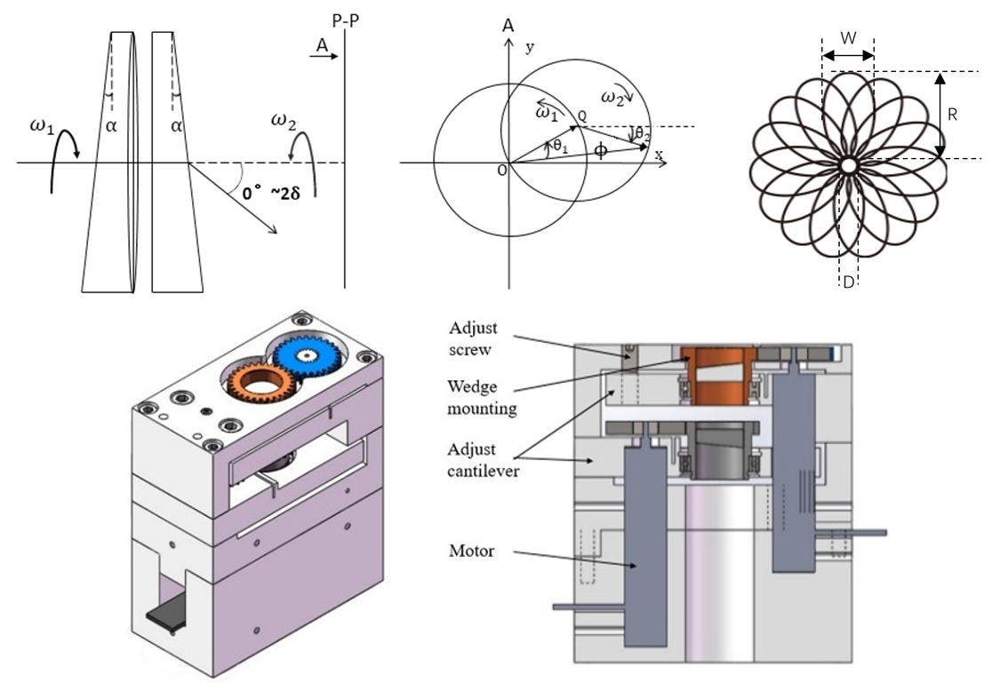 | Effect of Mechanical Error on Dual-Wedge Laser Scanning System and Error Correction Yunhao Ge, Jihao Liu, Fenfen Xue, Enguang Guan, Weixin Yan and Yanzheng Zhao Applied Optics. [Paper] |
| 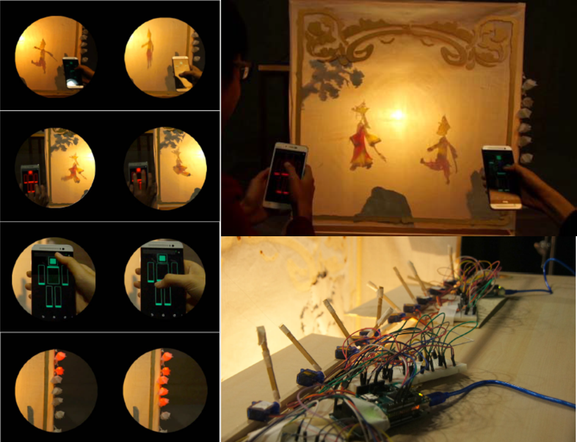 | Interactive Experience across Modern Age and Tradition: Application of Arduino in Shadow Play Kun Yin, Yunhao Ge, Heshan Liu and Yongquan Yin Advances in Mechatronics and Machinery . [Paper] |
| 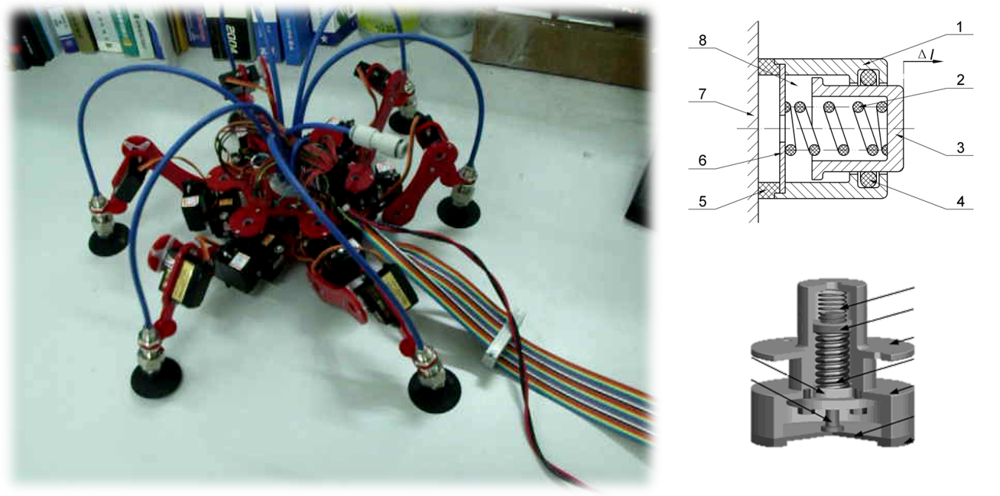 | Dynamic Drive Performances of the Bionic Suction Cup Actuator Based on Shape Memory Alloy Yunhao Ge, Jihao Liu, Weixin Yan and Yanzheng Zhao Intelligent Robotics and Applications (ICIRA 2017). [Paper] |
| 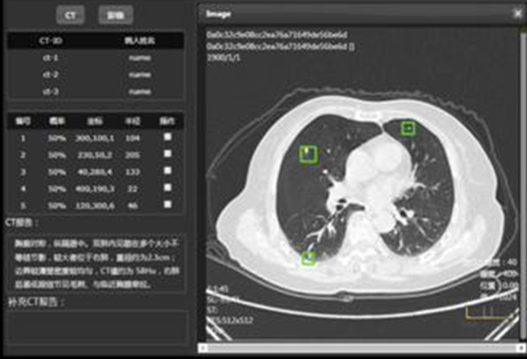 | Pulmonary Nodular Assisted Detection System Based on AI(V1.0) Yunhao Ge, Bin Li 2018SR037095. |
| 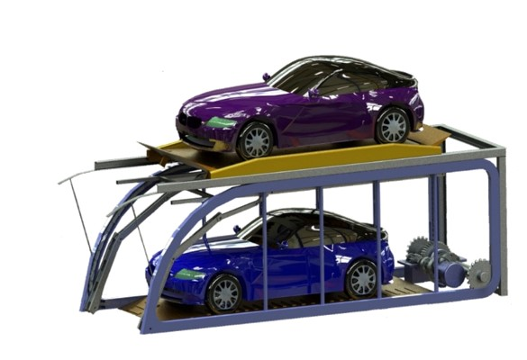 | A two-layer barrier free parking equipment based on bionic manipulator Yunhao Ge, Shangze Yang, Zheng Zhang, Weixin Yan and Yanzheng Zhao CN201610712048. |
| 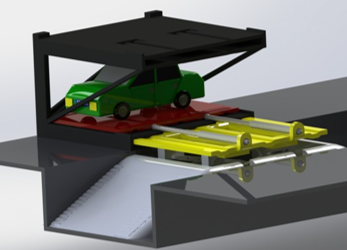 | A double decker parking equipment based on shear lifting mechanism and hydraulic
mechanism Yunhao Ge, Xulong Zhou, Peng Liu and Yanzheng Zhao CN201610704408. |
Last update: Jul. 30, 2018